JavaScript Básico
Agora veremos os conceitos iniciais da linguagem JavaScript, mas primeiramente devemos conhecer um comando importante em Html chamado input.
O elemento HTML input é uma forma de entrada de dados, é usado para criar controles interativos para formulários baseados na web para receber dados do usuário. A semântica de um input varia consideravelmente dependendo do valor de seu atributo type.
Iremos ver exemplos com input do tipo text e do tipo button, porém existem muitos outros tipos.
Tipo text (input type="text")
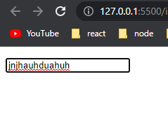
Tipo button (input type="button" value="Mostrar")
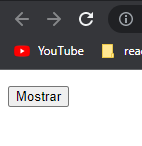
Na página inicial (cap 1) mostramos dois método em javascript, o alert e o prompt. Tais códigos foram escritos dentro do arquivo index.html, entre a tag script.

Porém a forma que os profissionais escrevem códigos em javascript é criando um arquivo com a extensão .js, e no final da tag body (em html) o arquivo é linkado.
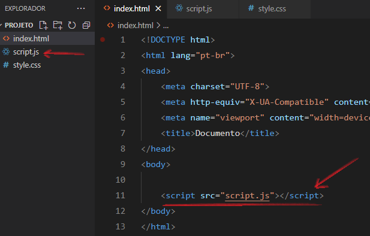
Agora iremos criar um pequeno programa que mostrará o nome digitado. Através desse programa aprenderemos novos conceitos em JavaScript.
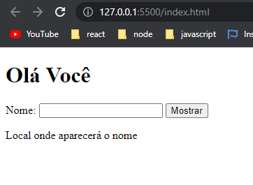
O objetivo desse programa é, ao digitar o seu nome na caixa (input type text) e clicar no botão Mostrar, o nome digitado apareça na saída "Local onde aparecerá o nome".
Tudo que está aparecendo no site foi feito dentro do arquivo index.html. O único código que será feito dentro do arquivo script.js é a função do botão mostrar.
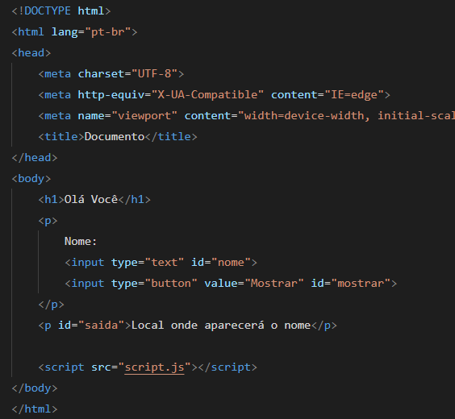
Note que dentro dos dois input's temos o uso de id's. Também temos um id dentro do segundo parágrafo (p). Essas id's servem de referência (também chamadas de identificadores), caso precise chamá-las dentro de um arquivo script.
O botão em si não faz nada. A ele se deve inserir uma função, que em javascript se chama function. Uma função contém um conjunto de comandos que realizam uma ação. Os comandos que pertencem a uma função devem estar delimitados pelas chaves { }.
É uma boa prática de programação dar um nome para a função começando por um verbo. O uso do CAMELCASE (mostraNome ou mostrarPrimeiroNome) é também um padrão recomendado e facilita a compreensão da leitura do nome.
Para referenciar um elemento HTML identificado no documento, deve-se utilizar o método getElementById( ). Esse método permite referenciar qualquer elemento que esteja no arquivo HTML, como um input, um parágrafo, um botão, uma imagem, um título, etc.
Para que um elemento HTML seja referenciado, ele precisa conter um atributo id, como foi visto na imagem anterior, onde o input text tem o id="nome" e o input button tem o id="mostrar".

Comando na linha 2
document = é o documento HTML, que é a parte visível no site.
getElementById('nome') = Está fazendo uma referência ao elemento HTML que tem o id="nome". É um espécie de ligação.
Essa ligação/referência está sendo colocada dentro da variável inputText.
Comando na linha 3
Após a ligação ser feita, agora sim o valor que foi digitado dentro do input text é capturado (através da propriedade value) e armazenado dentro da variável nome.
Comando na linha 5
Aqui o comando não é colocado dentro de nenhuma variável. A referência (ligação) é feita com o elemento que tem o id="saida".
A propriedade innerHTML é responsável por alterar o conteúdo de elementos de texto dentro do HTML. Então nesse caso, o elemento que possuir o id="saida" terá o seu conteúdo textual alterado para o texto que estiver armazenado dentro da variável nome.
Comando na linha 8
Aqui é feito a referência/ligação com o elemento que tem o id="mostrar", que nesse caso é o botão Mostrar. Essa referência é colocada dentro da variável mostrar.
Comando na linha 9
Esse comando significa que na variável mostrar é executado um método chamado addEventListener( ).
Esse método é chamado de "ouvinte de eventos", ou seja, ele fica prestando atenção em que momento o evento é disparado. Nesse caso ele esta a ouvir o evento click.
Assim que o evento click é disparado, a função mostrarNome (criada anteriormente) é acionada.
No exemplo anterior, declaramos três variáveis. Em programas maiores, o número de variáveis vai ser maior também. É importante mantermos a organização dos nomes para uma melhor compreensão. Podemos perceber que as variáveis são utilizadas para fins diversos: texto de entrada de dados, referência a elementos e mais pra frente, referência a elementos de saída.
A partir dos próximos exemplos iremos atribuir aos id's (dentro do HTML), nomes que nos indiquem o seu uso no programa: in de input para campos de entrada de texto, bt de button para botões e out de output para os locais de saída de dados.
Ex: inNome, btMostrar e outSaída.
E dentro do arquivo javascript iremos manter essa mesma regra ao referenciar esses elementos.
Funções Matemáticas em JavaScript (Math)
Em certos momentos iremos realizar algumas operações matemáticas em javascript, e para isso utilizaremos o comando Math. Veremos agora algumas funções de Math.
Math.abs(numero) - retorna o valor absoluto de um número, se o valor for negativo, ele será convertido para positivo. Se for positivo, o valor permanece positivo.
Math.abs(-3), retorna 3
Math.ceil(numero) - arredonda o valor para cima. Se o valor possuir decimais, retorna o próximo número inteiro.
Math.ceil(4.2), retorna 5
Math.floor(numero) - arredonda o valor para baixo. Retorna a parte inteira do número.
Math.floor(7.9), retorna 7
Math.pow(base, expoente) - retorna a base elevada ao expoente.
Math.pow(3, 2), retorna 9
Math.random( ) - retorna um número aleatório entre 0 e 1, com várias casas decimais.
Math.random( ), retorna 0.65738436395
Math.round(numero) - arredonda o valor para o inteiro mais próximo. A partir de .5 na parte fracionária, o valor é arredondado pra cima. Anterior a .5, o valor é arredondado para baixo.
Math.round(2.7), retorna 3
Math.sqrt(numero) - retorna a raiz quadrada do número.
Math.sqrt(16), retorna 4
Ordem de precedência dos operadores
Nas expressões matemáticas devemos ter cuidado com a ordem de precedência dos operadores.
O resultado das expressões a seguir são diferentes:
(n1 + n2) * 3
n1 + n2 * 3
Veremos agora a ordem correta:
1º - Os parênteses redefinem a ordem das prioridades.
(n1 + n2) * 3
2º - As funções matemáticas ou funções criadas pelo usuário tem prioridades sobre os demais operadores aritméticos.
Math.sqrt(9) * 8 / 2
3º - Os operadores de multiplicação (*), divisão (/) e módulo (%), tem prioridade sobre os operadores de adição e subtração.
2 + 5 * 2
4º - Caso uma expressão contenha operadores do mesmo nível, o resultado é calculado da esquerda pra direita.
5 / 2 * 3
IMPORTANTE: Você pode modificar a ordem de execução de qualquer expressão com a inserção de parênteses.
Exercícios
a ) Elabore um programa para uma vídeo locadora, que leia o título e a duração de um filme em minutos. Exiba o título do filme e converta a duração para horas e minutos, conforme destacado na imagem.
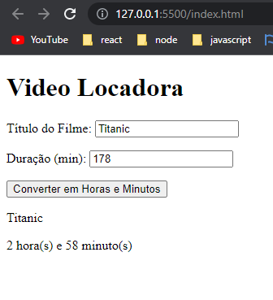
b ) Elabore um programa para uma revenda de veículos. O programa deve ler modelo e preço do veículo. Apresentar como resposta o valor da entrada (50%) e o saldo restante em 12x.
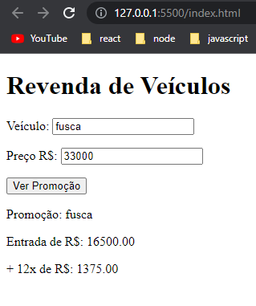
c ) Elabore um programa para um restaurante que leia o preço por kg e o consumo (em gramas) de um cliente. Exiba o valor a ser pago, conforme a imagem abaixo.
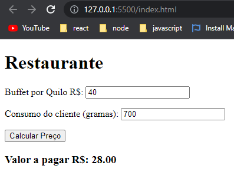
d ) Uma farmácia está com uma promoção. Na compra de duas unidades de um mesmo medicamento, o cliente recebe como desconto os centavos do valor total. Elabore um programa que leia a descrição e o preço de um medicamento. Informe o valor do produto na promoção.
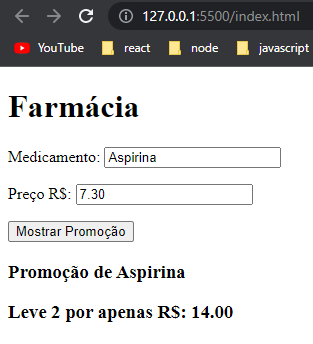
e ) Elabore um programa para uma lan house. O programa deve ler o valor de cada 15 minutos de uso de um computador e o tempo de uso por um cliente em minutos. Informe o valor a ser pago pelo cliente, sabendo que as frações extras de 15 minutos devem ser cobradas de forma integral.
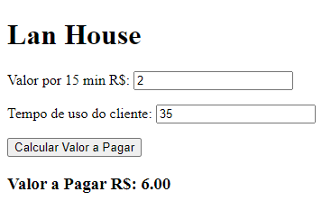
f ) Um supermercado está com uma promoção. Para aumentar suas vendas no setor de higiene, cada etiqueta de produto deve exibir uma mensagem anunciando 50% de desconto (para um item) na compra de três unidades do produto. Elabore um programa que leia descrição e preço de um produto. Após, apresente as mensagens indicando a promoção.
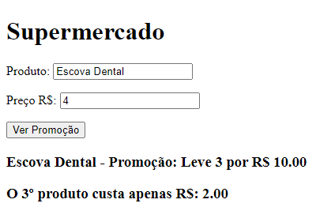
Resolução dos Exercícios
a ) Nesse arquivo html, temos três input's com id's. No final do arquivo temos dois elementos p, que serão a saída de dados. Note que não há conteúdo dentro deles. O conteúdo só aparecerá após todos os processamentos de dados. Logo em seguida temos o elemento script, que será responsável pela ligação com o arquivo javascript.
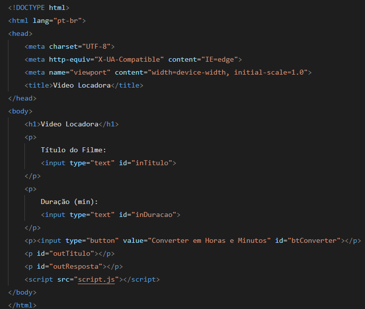
Aqui temos o arquivo script.js. Primeiramente temos as referências (ligação) feitas com os elementos no arquivo html. Tais referências só são possíveis devido ao id em cada elemento. Cada referência é armazenada em uma variável que possui o mesmo nome que o id.
A referência é feita através do comando document.getElementById que basicamente significa "pegar um elemento (pelo ID) dentro do documento HTML".
Logo em seguida temos o uso da propriedade value para capturar o valor que foi digitado dentro das caixas. Por padrão, esses input's do tipo text retornam uma string, então em inDuracao.value temos que converter a string em número com o uso do Number( ). Em seguida, os valores capturados sao armazenados em variáveis (titulo e duracao).
Para transformar os minutos em horas, é feito uma operação onde a duracao é dividida por 60. Porém queremos pegar apenas um número inteiro (as horas), como 1, 2 ou 3. Caso o valor da duracao seja de 65 minutos, ao dividir por 60 resultará em um número com casas decimais (1.083333...). Então usamos a função matemática Math.floor, que arredonda o valor para baixo e pega somente a parte inteira do número. Em seguida o valor é armazenado dentro da variável horas.
A próxima linha é responsável por pegar os minutos restantes. Para fazer isso, usa-se o sinal de módulo (%), que tem a função de pegar somente o resto de uma divisão. Por exemplo, se a duração for de 65 minutos, ao dividir por 60, o resto será de 5. Entao esse resto será armazenado na variável minutos.
Agora com todos os valores em mãos (titulo, horas e minutos), chegou o momento de apresentá-los na saída de dados. Esses valores serão apresentados nos elementos p's, que se encontram no final do arquivo em html. O comando innerHTML é responsável por alterar o conteúdo dos elementos. Nesse caso, ele altera o conteúdo dos parágrafos que possuem o id="outTitulo" e id="outResposta".
Por fim temos o funcionamento do botão. Essa função converterDuracao( ) só irá funcionar após o botão ser clicado. Primeiramente devemos criar a ligação/referência com o input button que se encontra dentro do arquivo em html. Tal referencia é feita através do id="btConverter". Em seguida temos a criaçao do "escutador de evento" que informa que, através de um click no botão a função converterDuracao é acionada.
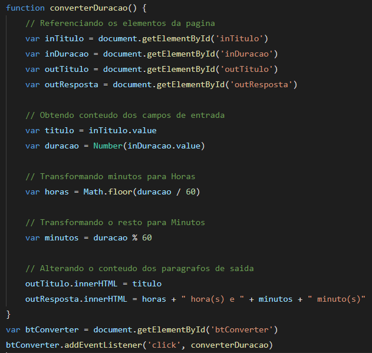
b ) Aqui a entrada de dados será nos input's text. O processamento de dados será no input button. E a saída de dados nos três parágrafos finais (id="outVeiculo", id="outEntrada" e id="outParcela").
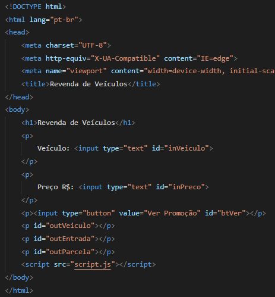
Primeiramente é feito a referência (ligação) com os elementos em html através do comando document.getElementById. Tais referências só são possíveis devido ao id em cada elemento. Cada referência é armazenada em uma variável que possui o mesmo nome que o id.
Em seguida o comando value é usado para capturar o conteúdo digitado. Em inPreco.value temos que converter a string em número com o uso do Number( ). Em seguida, os valores capturados sao armazenados em variáveis (veiculo e preco).
Para pegarmos o valor da entrada do veículo de 50%, dividimos o preco por 2.
Como o valor restante também é 50%, podemos pegar a entrada e dividir por 12 para pegarmos o valor das parcelas.
O comando innerHTML altera o conteudo do elemento. No caso do comando outVeiculo.innerHTML, o conteúdo ("Promoção: " + veiculo) será colocado dentro do elemento p.
Por fim temos o funcionamento do botão. Essa função mostrarPromocao( ) só irá funcionar após o botão ser clicado. Primeiramente devemos criar a ligação/referência com o input button que se encontra dentro do arquivo em html. Tal referencia é feita através do id="btVer". Em seguida temos a criaçao do "escutador de evento" que informa que, através de um click no botão a função mostrarPromocao é acionada.
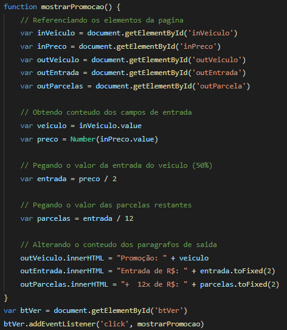
c ) A entrada de dados será os input's text. O processamento de dados será no input button. E a saída de dados no h3 (id="outValor").
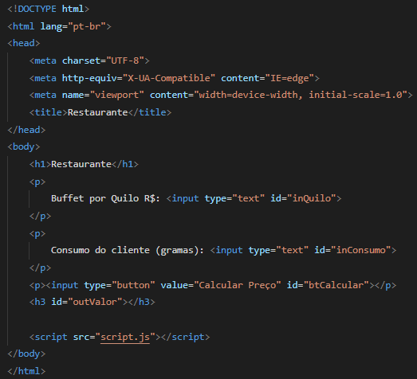
Para calcular o valor a ser pago, devemos pegar o preço de 1 kilo e dividir por 1000, logo em seguida multiplicar pelo consumo do cliente. O resultado é armazenado dentro da variável valor.

d ) A entrada de dados será os input's text, que estão dentro dos dois primeiros parágrafos (p). O processamento de dados será no input button. E a saída de dados nos dois h3.
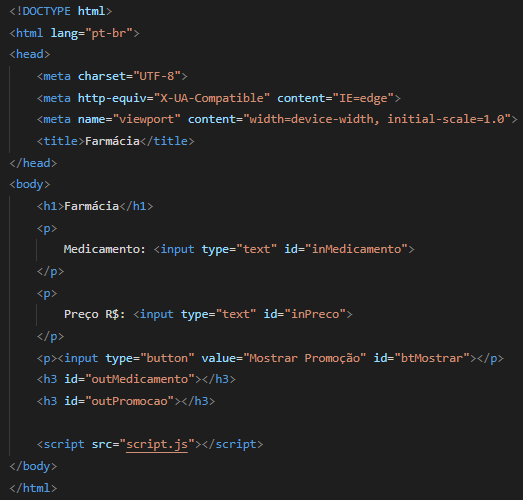
O valor do desconto é calculado com a ajuda da função matemática Math.floor. O preco pode ter casas decimais, entao o Math.floor arredonda o numero pra baixo e pega o numero inteiro. Logo em seguida multiplica por 2 e armazena o valor dentro da variavel desconto.
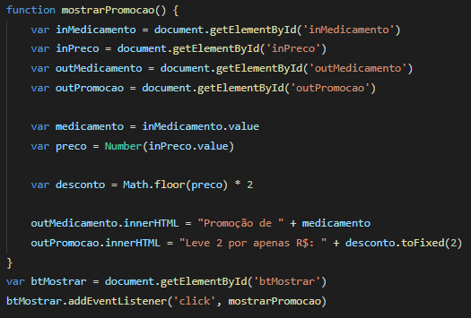
e ) A entrada de dados será os input's text, que estão dentro dos dois primeiros parágrafos (p). O processamento de dados será no input button. E a saída de dados no h3.
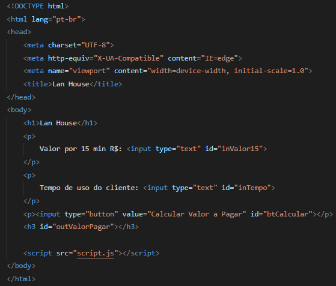
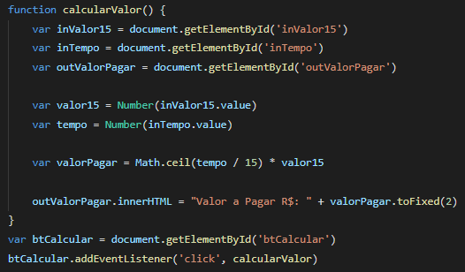
f )
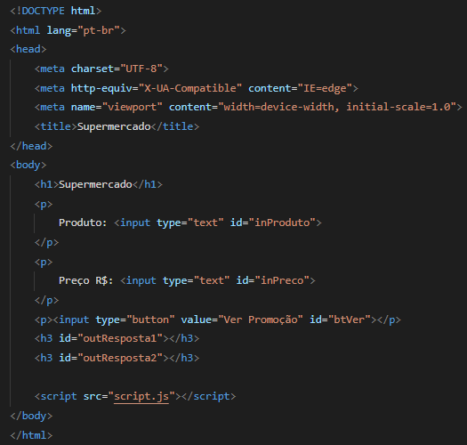
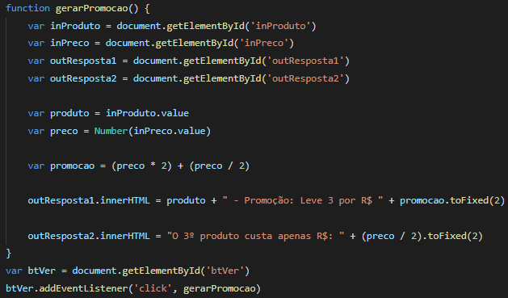